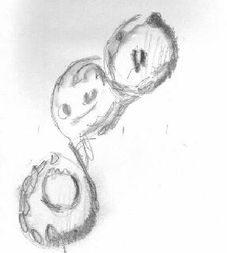

SJAA
Ephemeris
|
SJAA Ephemeris |
Minutes of the Meeting of the SJAA Board of Directors
|
The meeting was called to order by President Ed Erbeck at 6:42pm at Houge Park. All directors were present (eventually) except Terry Kahl who was excused.
We discussed the issue of having a host at our dark sky parties. The consensus seemed to be that we could try to have someone there with a little sign and some membership materials for a fairly small amount of effort. We also agreed that we would drop references to Henry Coe State Park from our calendar of events. Bill A and Mike agreed to try to find a "host" for the upcoming Fremont Peak events.
Bill A suggested that we might want to charge a small fee for the use of the loaner scopes. This was rejected. But we Mike may start mentioning to the borrowers that a small donation toward the upkeep of the scopes would be appreciated.
Mark will talk to KTEH about having them announce SJAA activities.
As of the time of the meeting only 13 APDs were left unsold (a few more sold later that night). This has raised over $400 for the club! Nice work, Mark.
Bill agreed to print some ballots for the election next month just in case there is a nomination from the floor.
We agreed to get a PO box for the club so that SJAA correspondence doesn't have to go to Bob Elsberry any longer than necessary. Ed agreed to go to the Post Office to set it up.
WE STILL NEED A TREASURER! Dave North has agreed to do the maintenance of the membership list. But we need someone to handle the money.
We elected Morris Jones to be our AANC representative since he has been doing it unofficially anyway. He wasn't there to object so we hope he doesn't mind :-)
The meeting was adjourned at 7:50.
|
 |
| Bill Arnett; last updated: February 05, 2002 | Prev Next |